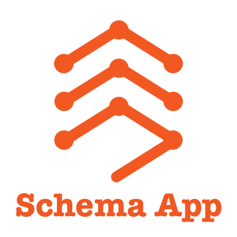
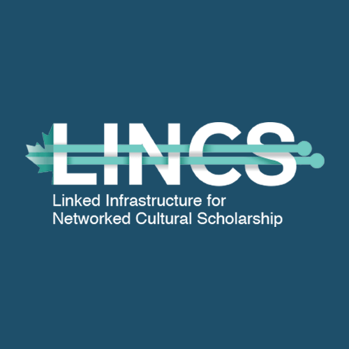
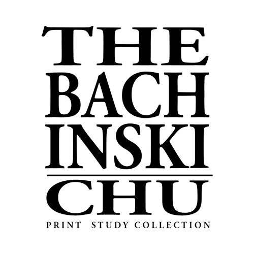

|  | Schema AppSchema App is a semantic technology company focusing on search engine optimization and AI dataset creation using Schema markup. We work with clients who are looking for an improved search presence and those who want to be prepared for the fully AI based search engines of the future. In addition to this, we develop knowledge graphs based off client websites, which can be utilized to train custom AIs for internal or external company use. Across two co-op placements, I've worked for Schema App a total of 1 year and have made many contributions to their software systems. I've accepted a job offer from the company, and am looking forward to working with them further. Read More |
|  | The LINCS ProjectThe LINCS Project is a 3 year infrastructure project hosted by the Digital Humanities Department at the University of Guelph. LINCS is an interdisciplinary project working with multiple Canadian Universities that aims to build web tools for humanities research. Using an rdf-style database format called linked open data and adhereing to the philosophy of Tim Berner's Semantic Web, LINCS hopes to assist researchers in online publishing, collaboration and curation of large datasets. This was my first Co-op position; I worked for LINCS as a Software Developer for 8 months during two Co-op semesters, and am currently continuing employment with them part time. Read More |
|  | The Bachinski-Chu Print Collection WebsiteThe Bachinski-Chu Print Study Collection is a faculty-led and student-curated gallery run by the Arts Department at the University of Guelph. The purpose of the collection is to act as an interactive and hands-on experience for art students studying collection curation and maintenance. When the COVID-19 pandemic hit, the curators decided it was time to expand the collection into the online space. I was hired through my connections at LINCS as the primary Web Developer for the project. I guided a group of art students in UX design and created a dynamic web app for viewing and displaying an art gallery. The website was developed over a couple of months. The final product is visually appealing, and has had special considerations made to make it ADOA compliant. Read More |